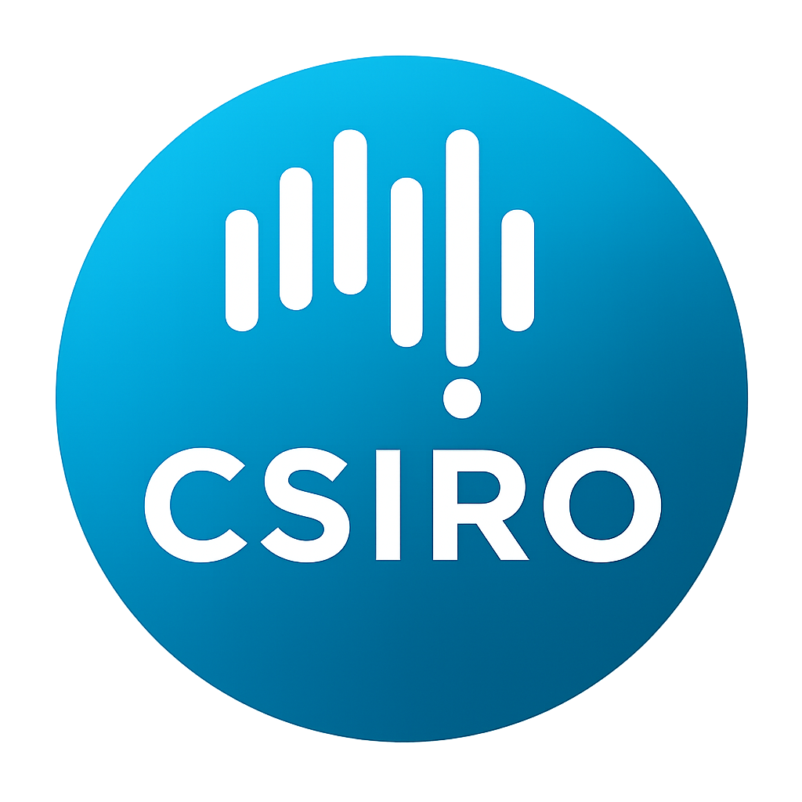
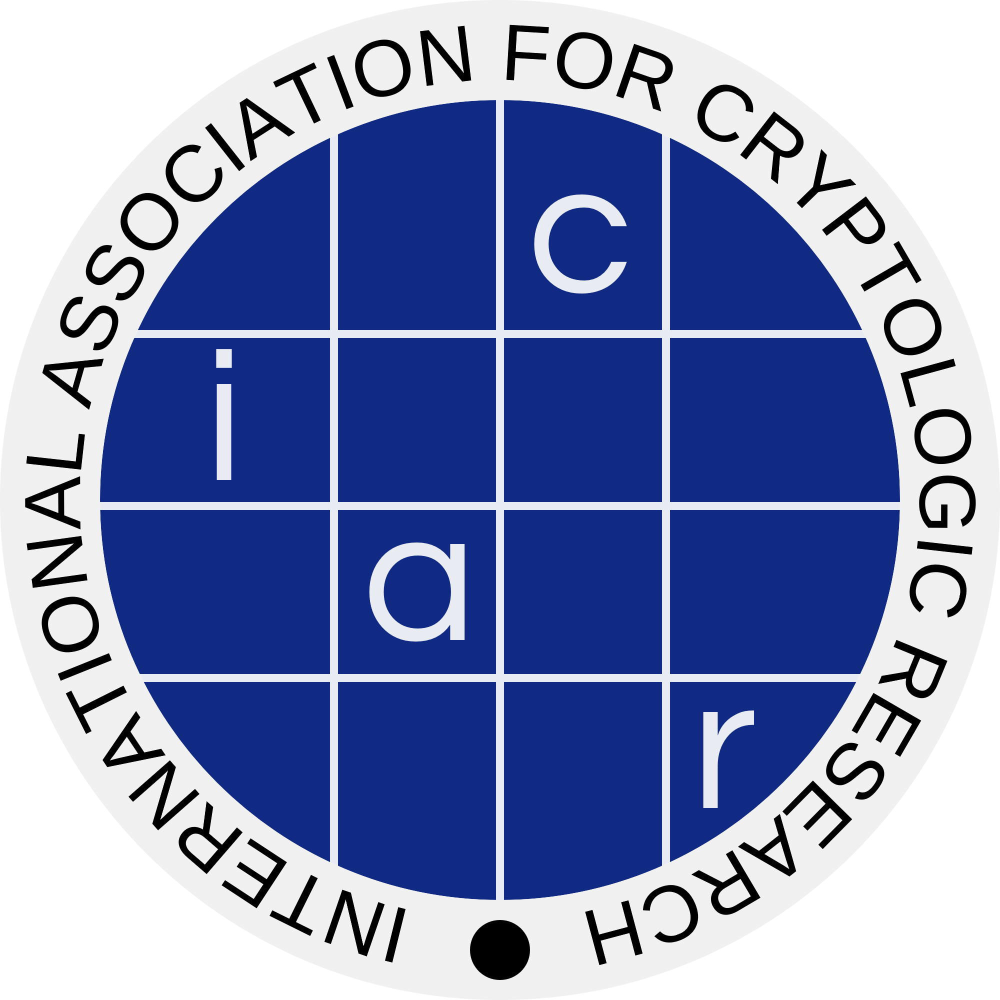

Crypto for Real World Asset
Dec 8th, 2025
Monash University, Melbourne, Australia
Monash University, Melbourne, Australia
| Calls | Program | Registration |
The first international workshop of Cryptography for Real-World Assets (CRWA, affiliated with Asiacrypt 2025) brings together cryptographers, blockchain engineers, and financial technologists to address the unique challenges of tokenizing traditional assets. As the financial industry increasingly adopts blockchain technology, new cryptographic solutions are essential to ensure security, privacy, and regulatory compliance in tokenized asset ecosystems.
CRWA'25 focuses on practical cryptographic implementations for high-value, long-lifecycle financial instruments including bonds, equities, commodities, and central bank digital currencies (CBDCs). The workshop emphasizes real-world deployment challenges, regulatory requirements, and the intersection of traditional finance with decentralized technologies.
Real-world asset tokenization represents a convergence of cryptography, finance, and regulatory technology. From CBDC implementations requiring programmable monetary policy to institutional custody solutions demanding post-quantum security, each use case presents distinct cryptographic challenges. We seek contributions that advance both theoretical understanding and practical deployment of cryptographic protocols in cryptocurrency and tokenized asset systems.
We welcome both theoretical cryptographic advances and their practical applications in cryptocurrency and real-world asset tokenization scenarios. Papers may focus on novel cryptographic primitives, protocol innovations, system implementations, or deployment experiences in cryptocurrency production environments. Topics of interest include, but are not limited to:
We invite submissions of original work on cryptographic foundations for real-world asset tokenization.
Format Requirements:
Important Notes:
We particularly encourage submissions of ongoing research that has not yet been submitted to top-tier conferences. The workshop provides an excellent venue for showing results, receiving feedback, and practicing presentations before major conference submissions.
|  |

|
 |